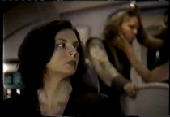
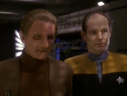
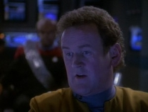
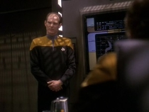
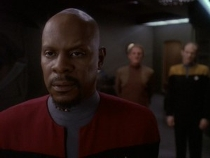
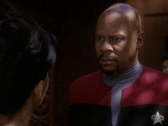

|
Fundamentos
ideolgicos e validade moral do levante contra a Federao
Os
colonos e as motivaes relativas ao seu grupo social como um todo
-
Olhe l fora.
[Eddington aponta um disruptor klingon contra Sisko, que afasta uma lona]
- Estas pessoas? Eles eram colonos em Salva Dois. Eles tinham
fazendas, e lojas, e lares e escolas... ento, um dia, a Federao assinou um
tratado e entregou o seu mundo aos cardassianos... bem deste jeito. Eles tornaram
estas pessoas refugiados da noite para o dia.
- No
to simples assim e voc sabe disto. Estas pessoas no precisam viver assim...
ns oferecemos realocao.
- Eles
no querem ser realocados. Eles querem ir para casa para as vidas e lares que
eles construram.. --
Eddington e Sisko, For
the Uniform. A
paixo e o entusiasmo pelo qual os Maquis se pegam a sua causa admirvel, e
merece uma avaliao mais cuidadosa. Ao longo de todo o arco, as razes desta
rusga foram estabelecidas meramente como sendo a questo do tratado com os cardassianos.
Assim, importante considerar que na questo Maqui, jamais houveram razes ideolgicas
realmente profundas como motivao para o levante destes cidados federados contra
seu governo.  Em
momento algum do arco, jamais se estabeleceu que os participantes do movimento
tivessem quaisquer divergncias de cunho racial, religioso, econmico, social
ou qualquer outro aspecto destes contra as polticas da Federao antes
que a Federao tivesse o posicionamento que teve em relao ao acordo com os
Cardassianos e sua entrega das colnias. Mesmo uma eventual tentativa de se aplicar
a minha chamada "Velha Mxima", sobre "No ter sido visto em tela
no quer dizer que no exista", no possvel, pois houveram ao longo do
arco inmeros momentos onde a meno a estas outras questes ideolgicas teriam
sido adequadas ou at mesmo fundamentais, caso realmente tivessem existido. At
como comentei anteriormente, no houve sequer uma eventual crtica a "No
Vivemos no Paraso, Faam Algo" que existisse bem antes da questo
da devoluo surgir foi colocada como eventual pano-de-fundo ideolgico para motivao.
Mas como vimos, nada disto ocorreu. Desta forma, considero seguro afirmar que
nenhum daqueles rebelados federados realmente tinham rusgas ideolgicas profundas
contra a Federao alm daquelas que se encaixam na questo de "Perdemos
Nossos Lares" e "A Federao Nos Abandonou".
Estas
so de fato razes plenamente compreensveis de um homem se rebelar contra um
sistema de governo. Contudo, apenas por si mesmas, e considerando todo o contexto
social onde tais homens estavam inseridos, tambm no querem dizer que torna tais
razes completamente justificveis, e assim, o levante Maqui pode, sim, ser questionado
quanto a sua validade moral. Ele pode, sim, ter sido algo fundamentalmente errado
de os colonos fazerem. Enquanto
estava tudo bem e tudo bom, supostamente no havia nada de errado com nenhuma
poltica da Federao, como vimos. No interessaria como e sob que circunstncias
a Federao teria conquistado aquele territrio, e se isto seria justo ou no,
o que interessava para os colonos que agora era territrio federado. Contudo,
quando a poltica colonial federada teve que ser revista, ento nisto, e apenas
e to somente nisto, o levante Maqui surgiu com o discurso de "Opressores"
e "Feddies Go Home". Nunca se tratou de ideologia, de se acreditar em
ideais, de se questionar as tradicionais posturas e valores federados. Nunca se
tratou de serem contra o eventual imperialismo federado. Tratou-se de que, quando
as polticas federadas, com as quais sempre concordaram, passou a agir contra
eles, a sim tais polticas aparentemente se tornaram imorais e questionveis;
a sim a Federao passou a ser vista como maligna. Ou seja, se tratou de eles
terem perdido a ferramenta do imperialismo federado, ferramenta a qual eles nunca
tiveram objees algumas, e ferramenta absolutamente necessria para eles.
Pois
segundo consta, o cidado federado algum que est plenamente consciente de
que o bem-estar do todo de sua sociedade algo que deve vir primeiro, algo que
deve se sobrepor aos seus prprios desejos e interesses pessoais. Atitudes egostas
e meramente em proveito prprio so conceitos que supostamente o tpico cidado
federado j deixou para trs na evoluo de sua sociedade. As necessidades da
maioria se sobrepem as necessidades da minoria... ou a de um s.
 Mas,
como alguns outros federados j nos mostraram, tambm existem situaes onde a
necessidade da minoria a que se sobrepe, e leva pessoas a cometerem atos que
se pode classificar com traio por um ngulo, mas tambm como alta lealdade por
outro. Assim, eu no quero dizer com esta anlise que os posicionamentos dos colonos,
se realmente aplicado como sendo algo que fizeram, tenha sido algo necessariamente
ruim para a srie, muito pelo contrrio. Poder haver uma leitura das atitudes
dos colonos de modo a os retratar como humanos que tem falhas, humanos que tem
agendas prprias e que podem desejar agir mais em seu prprio interesse do que
no interesse de sua comunidade, que supostamente o que se esperaria de bons
federados, de fato algo interessante e que ajuda a dar texturas mais palpveis
a estes humanos, uma boa adio ao contexto social onde se passa o universo de
Jornada. Mas so avaliaes importantes de serem feitas.
Eddington
e suas motivaes pessoais -
Eu conheo voc. Eu j fui como voc, mas ento eu abri os meus olhos. Abra os
seus olhos, Capito. Por que a Federao to obcecada com os Maquis? Ns nunca
lhe fizemos mal. E mesmo assim ns somos constantemente detidos e acusados de
terrorismo. Suas naves estelares ns caam por toda a Badlands e nossos simpatizantes
so assediados e ridicularizados. Por que? Por que ns deixamos a Federao, e
esta uma coisa que vocs no podem aceitar. Ningum deixa o paraso. Todos deveriam
querer ser membros. Mas que diabos, vocs querem at os Cardassianos como membros.
Vocs esto somente lhes enviando os replicadores pela certeza de que um dia eles
iro ocupar o seu "lugar reservado" no conselho da Federao. Sabe,
de certo modo vocs so piores do que os Borgs. Pelo menos eles avisam sobre seus
planos de assimilao. Vocs so mais insidiosos. Vocs assimilam pessoas, e elas
nem mesmo sabem disto. --
Eddington, For
the Cause. Como
visto em "For the Cause", o Comandante Michael Eddington, attach
de Segurana da Frota Estelar para DS9, traiu a Federao ao agir como o principal
operativo Maqui na obteno de replicadores industriais destinados para os cardassianos,
e conseguiu pegar todo o comando de DS9 com as calas na mo. Ao final do segmento,
se despede de Sisko com um timo dialogo com ele, no qual inclui o monlogo acima.
Eddington
levanta excelentes pontos neste seu discurso, inmeros dos quais eu mesmo compartilho
e concordo plenamente. S que Eddington se pega em omisses e falcias para procurar
argumentar suas justificativas. Ele afirma que os Maquis nunca lhes fizeram mal.
Eles queriam deixar a Federao e ficarem onde estavam? Muito bem, mas da mesma
maneira, aparentemente no queriam, ou no tinham como se tornarem cidados da
nao a qual estava chegando ali no local, Cardssia. O que fazem? Entram em conflito
com os cardassianos, e ainda que possam ter reagido como defesa, sabidamente tambm
atacaram alvos civis e fizeram muito das suas. Com isto, quer desejassem ou no,
eles tornaram a coisa um problema tambm da Federao, mas Eddington desonesto
e intransigente demais para admitir isto, uma vez que isto, obviamente, rasparia
fora parte da santidade que quer aplicar a seu discurso.
Ocultar
quaisquer motivaes pessoais de Eddington antes de "For the Cause"
era algo de se esperar, sem dvida alguma, a fim de manter o elemento de surpresa
sobre a traio de um dos tripulantes secundrios da estao ao qual estvamos
to acostumados a encararmos como um leal operativo federado no time de Sisko.
Em relao ao cerne da questo Maqui, no h realmente nada a considerar diretamente
-- Eddington no era um colono ou tinha relao direta com as colnias de alguma
forma, ento no tinha realmente nenhuma ligao pessoal com o levante.
 Contudo,
aps Eddington claramente ser estabelecido como Maqui, poderamos esperar um maior
aprofundamento nas motivaes que o levaram a ingressar no movimento... mas no
muito mais temos alm desta frivolidade mal embasada do seu discurso inicial,
alm tambm das reaes dele vendeta pessoal de Sisko contra si, coisa que ele
interpreta como a obsesso federada em os perseguir supostamente sem motivao,
como ele menciona em seu discurso.
Por
ambos os episdios "For the Uniform" e "Blaze of Glory",
no temos rigorosamente nenhum indcio que indique que o prprio Eddington tivesse
um posicionamento ideolgico fundamentalmente contra as polticas federadas anterior
a todo o problema colonial com os cardassianos, da mesma maneira que para os demais
Maquis, bem como outras questes fundamentais a sociedade federada a qual fizeram
parte. Sim, tem a parte que ele comenta em seu discurso que "abriu os olhos",
mas omite qualquer outra questo mais especfica que justifique suas aes, e
no lugar disto apenas faz alegaes vagas sobre assimilao disfarada, em um
rano geral que, ainda que no tenha soado falso, soou claramente desprovido de
real substncia. Pois importante se considerar algo importante sobre to badalado
discurso: na parte em que ele compara a Federao ao Borg, ele j passou o que
fala para um ponto que seria mais ideolgico do que qualquer coisa, um ponto que
uma crtica a Federao em geral, e tal crtica, tal viso, algo basicamente
ideolgico, e no h nenhum indcio de que Eddington tinha sequer pensado a respeito
disto antes de deixar a Federao. E ter se levado em considerao tais elementos
teria sido algo a mais a se inserir no apenas no personagem, mas tambm no arco,
e acredito que teria incluindo tintas ainda mais interessantes em ambos.
H,
claro, tambm o elementos de busca da glria de lder em tempos difceis, sobre
o qual Sisko especula em determinados momentos de "For the Uniform"
e "Blaze of Glory", e um elemento que no pode ser ignorado.
Sisko analisa a admirao que Eddington demonstra por Os Miserveis, o
romance francs escrito por Victor Hugo, e como h mais na comparao feita por
Eddington a Sisko e o livro o prprio Eddington se v na mesma situao. Eddington
quer partir de modo grandioso, de modo significativo, e isto principalmente poderia
ser incentivado por sentimentos ideolgicos, ou egocntricos. Como o primeiro
algo que a causa Maqui toda carece, e tambm Eddington, ficamos com o aspecto
de glria pessoal para satisfazer o prprio ego, que Eddington pinta com tintas
nobres a associar isto a uma causa maior. A
incapacidade federada em lidar com o problema Maqui -
Capito, o senhor alguma
vez lembrou a Frota Estelar de que eles colocaram Eddington aqui em DS9 porque
eles no confiavam em mim?
- No.
- Faa, por favor. --
Odo
e Sisko, "For the Uniform". Ao
longo de todos os episdios relacionados a crise Maqui, desde "Journey's
End", em A Nova Gerao, a Federao demonstrou uma incrvel capacidade
de meter os ps pelas mos em tratar do problema, e de muitas maneiras, em uma
situao onde tinha que optar por uma deciso entre vrias possveis, ela sempre
optava pela pior possvel, especialmente nas situaes em que todas as opes
eram de certa forma ruim. Em
situaes deste tipo, havia muitos personagens que consideram que a Federao,
j que est frente a isto, uma situao onde no h sada, onde todas as opes
colocam a Federao em uma posio desfavorvel, ento ela deveria ir pelo menos
pela opo que satisfaz o seu prprio pessoal. Por este ngulo, eu poderia entender
a eventual seguinte opo federada: "Embora poderia admitir que estivesse
errada inicialmente sobre ter ocupado aqueles setores, o que aconteceu, aconteceu.
Assim, a Federao deveria escolher lutar ao lado de seu povo, ao invs de abandon-lo,
e deveria fazer isto quer estivesse certa ou errada a respeito do real direito
sobre as colnias. A defesa do seu pessoal ali deveria se sobrepor a isto tudo."
 Este
posicionamento, basicamente o mesmo do cenrio nmero 3 que discutimos anteriormente
neste artigo, embora eu pessoalmente o consideraria inadequado, seria um posicionamento
no qual a Federao pelo menos teria a decncia de pisar firme por algo em que
acreditaria ser aquilo que deve prevalecer em relao a toda a situao, algo
nas linhas de "Sim, teria sido errado ocupar as colnias em primeiro lugar,
tudo bem, mas a esta altura do campeonato, mais errado ainda seria abandonar os
colonos, ento no iremos ceder". E assim, federados e colonos, conscientes
de sua escolha, certa ou errada, enfrentassem juntos e firmes as conseqncias
de seus atos.
De
muitas formas, isto seria semelhante ao que Israel tem feito ao longo dos anos,
desde que ocupou a Cisjordnia aps a Guerra dos Seis Dias, em 1967: embora se
pode constatar claramente que a ocupao ilegal aps se fazer uma avaliao
racional da situao, e assim tal situao condenada pela comunidade internacional,
Israel tambm no pode negligenciar o fato de que, tenha sido certo ou errado,
colocou colonos no local e tais colonos fizeram ali seus lares. Retroceder agora
e entregar sem mais nem menos o controle da regio para os Palestinos colocar
aos colonos a seguinte situao: ou deixam seus lares e retrocedem para Israel,
ou ficam no meio de um estado que hostil a sua presena ali. Basicamente, a
mesma situao na qual a Federao colocou os seus prprios colonos. Eu no tenho
como concordar com esta eventual posio e racionalizao da situao, mas entendo
quais poderiam ser os sentimentos que poderiam levar a ela. Posteriormente
a implantao do tratado, inmeras vezes a Federao tambm demonstrou no saber
lidar adequadamente com o conflito que resultou desta deciso. Particularmente
aos ltimos trs episdios do arco, Eddington percebeu claramente que Sisko estava
levando suas operaes contra os Maquis, particularmente se voltando contra ele,
mais por questes pessoais do que qualquer outra coisa, como desejar que uma situao
estvel retorne a regio. Apesar disto, em um raro surto de bom senso, o Almirantado
federado faz com que o Capito em comando das operaes contra Eddington mude,
para o Capito Sanders. Contudo, mesmo esta mudana de comando no melhora a situao,
e depois, a Federao no tem como impedir que Sisko retome as rdeas, e tambm
no demonstram reservas a esta atitude ou as suas tticas.  Com
a sua expertise prvia em procedimentos federados, Eddington sem dvida utiliza
isto muito bem a seu favor, aproveitando-se da suprema incapacidade e incompetncia
federadas de conseguirem coordenar o que quer que seja, para com isto dar um baile
nos operativos federados enviados contra ele, e na turma da Defiant em
particular. O que no quer dizer, claro, que esta inaptido federada em lidar
adequadamente com a crise no tinha como virar-se contra ele. o que de fato
ocorre, com a iniciativa de Sisko em utilizar ele mesmo armas de destruio em
massa contra as posies maquis na Zona Desmilitarizada. Eddington desdenha da
ameaa de Sisko como quem chama o seu blefe, mas o Capito federado mostra-se
impassvel e plenamente firme e decidido, e Eddington pode reconhecer a seriedade
de Sisko. Com
a sua expertise prvia em procedimentos federados, Eddington sem dvida utiliza
isto muito bem a seu favor, aproveitando-se da suprema incapacidade e incompetncia
federadas de conseguirem coordenar o que quer que seja, para com isto dar um baile
nos operativos federados enviados contra ele, e na turma da Defiant em
particular. O que no quer dizer, claro, que esta inaptido federada em lidar
adequadamente com a crise no tinha como virar-se contra ele. o que de fato
ocorre, com a iniciativa de Sisko em utilizar ele mesmo armas de destruio em
massa contra as posies maquis na Zona Desmilitarizada. Eddington desdenha da
ameaa de Sisko como quem chama o seu blefe, mas o Capito federado mostra-se
impassvel e plenamente firme e decidido, e Eddington pode reconhecer a seriedade
de Sisko.
Chega
a ser irnico, de muitas formas. Desde as mais remotas razes da crise, vindas
da guerra cardassiana da dcada de 2350, a Federao demonstrou uma capacidade
sem igual de meter os ps pelas mos e fazer as piores escolhas possveis, mesmo
em cenrios onde s haviam escolhas ruins. E agora, se aproximando do apagar das
luzes da crise, ela se v frente a uma situao onde um oficial de campo seu se
valeu de armas de destruio em massa, sem sequer ter a mais nfima autorizao
do governo federado para isto. E como visto ao final de "For the Uniform": -
Benjamin, eu estou curiosa... o seu plano de envenenar os planetas maquis... voc
no providenciou a autorizao com a Frota Estelar primeiro, providenciou?
- Eu
sabia que tinha esquecido de fazer algo. --
Dax e Sisko, "For
the Uniform". Sisko
sequer considera as eventuais conseqncias de seus atos, e sequer demonstra preocupao
aqui neste momento com Dax. O resultado final o que importa, e quanto a trmites
e consideraes burocrticas, isto no o vai impedir de agir firme -- como se
ele j soubesse de antemo que a Frota Estelar e o governo Federado no vo fazer
absolutamente nada em relao a esta sua atitude. Duas hipteses para esta aparente
segurana demonstrada nesta cena: ou ele sabe que seus superiores so realmente
um bando de bananas-sem-espinha que controlam um governo criminalmente omisso,
e cuja opinio pblica federada composta de uma populao aptica e desinteressada,
ou ento ele sabe que estes mesmos superiores concordariam com o seu uso de armas
de destruio em massa da maneira que fez, e no se ope a uma situao em que
a deciso de se usar tais armas est meramente com o comandante local. Ambos os
casos no so atitudes moralmente justificveis por Sisko e/ou pelo governo federado,
para se dizer o mnimo.  "Ah,
mas ningum se feriu", "Ningum foi morto". Verdade. Mas isto no
muda o fato de que Sisko empregou armas de destruio em massa sem a autorizao
do governo federado, e absolutamente nada foi demonstrado como conseqncia deste
ato, que supostamente deveria ser questionado por este governo. Mas, como de praxe,
nada temos vindo do aptico e ausente governo federado, e querer se racionalizar
a deciso de Sisko e a falta de conseqncias a ela como algo justificvel nas
bases do "Ah ningum morreu" ignorar completamente as razes que fez
da atitude de Sisko algo moralmente questionvel em primeiro lugar.
O
Embate entre Eddington e Sisko -
Sabe qual o seu
problema, Capito? Voc est levando isto para o lado pessoal. No tinha que ser
assim, isto no era sobre mim... eu no tenho antipatia ou ressentimentos contra
voc.
- Eu gostaria de poder dizer o mesmo.
- Realmente vale a pena arriscar
a voc mesmo, sua nave... sua tripulao... em uma vendeta pessoal? A Frota Estelar
aprovaria? --
Eddington e Sisko, "For
the Uniform". De
muitas maneiras, a interao entre Eddington e Sisko, entre o final de "For
the Cause" at o final de "Blaze of Glory" serve como
um microcosmos de todo o arco, e das posies federadas e maqui nas questes da
crise. Sisko segue um senso de dever racional para encarar o problema, mas sem
perder de vista que de certa maneira, os maquis tem suas justificativas para lutar.
Seu senso de dever contudo no faz com que ele abandone a sua convico de que
a soluo federada encontrada a que deve ser mantida, apesar de seus problemas,
e a medida que o problema avana, a resoluo deste se torna uma obsesso para
si. Eddington, por outro lado, olha a crise toda como uma causa completamente
justificvel a ponto de ficar admirado em constatar que podem existir pessoas
que pensam diferente do que ele, e para garantir a suposta validade moral daquilo
que defende, faz racionalizaes imprecisas e baseadas em falcias, ignorando
aspectos especficos de todo o problema, no caso destes aspectos atrapalharem
suas intenes de defesa de causa grandiosa.  Sem
dvida, a interao entre estes dois personagens so o ponto alto destes trs
episdios em particular. Temos um Eddington completamente diferente daquele que
costumvamos ter, que at ento fazia sua participao nas tramas de uma maneira
to neutra e tranqila que praticamente soava como rudo branco. A isto, se contrape
as reaes de Sisko, e embora ele siga no seu melhor e no perca o rebolado em
momento algum, Sisko no conseguia pegar o Maqui de guarda abaixada de modo a
ele estar com a iniciativa quando Sisko finalmente conseguiu isto, com a sua
prpria utilizao de armas de destruio em massa, no hesitou em momento algum
a aproveitar a oportunidade para o golpe final do embate. Posteriormente, ele
soube conduzir melhor sua interao com Eddington na misso de parar os supostos
msseis maquis. E embora "Blaze of Glory" no tenha sido realmente
o melhor dos trs episdios ("For the Uniform" o ), o seu dilogo
com Eddington durante a misso est entre os melhores momentos entre os dois adversrios,
e um dos melhores de Sisko no geral. Mas embora Sisko estivesse sob controle da
situao, isto no impediu Eddington de ter uma surpresa escondida no final, claro,
ao revelar que aquele ardil todo era meramente um plano B para resgate de eventuais
sobreviventes maquis. No frigir dos ovos, ao final de "Blaze of Glory",
Sisko foi quem restou de p na arena, mas com um sentimento de "Bem jogado,
Eddington, bem jogado" do que um nas linhas de "Eu venci, e na sua cara!"
Uma pena realmente que "Blaze of Glory" seja realmente o final
das possibilidades de interao entre dois to fantsticos e bem construdos personagens.
Continue
lendo: Conclusões Voltar
|